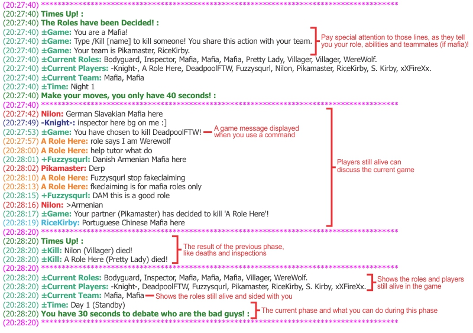
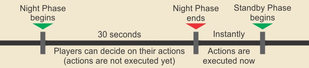
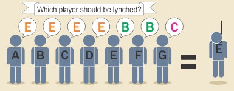
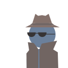
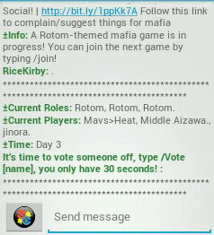

Mafia Game: Beginner's Guide
What is Mafia?
Mafia is a game that puts an Informed Minority (Mafia, seen as the bad guys) against an Uninformed Majority (Village, seen as the good guys).
Each player is assigned a role when the game starts, and must work in accordance to help their team win.
Goal
The objective of the game is to remove all players from the opposing factions.
How?
The main method to remove players from the game is by lynching them.
Every turn, all players (Village and Mafia) can vote for a player that they want to lynch. The player that receives more votes on that turn is lynched and removed from the game.
Village usually has a better voting power due to being the majority, but the lack of information means they must be careful to avoid lynching a teammate or letting the Mafia control the votes.
Powers
Certain roles are given special abilities to help their team achieving their objective.
The most common ability is kill, generally given to the Mafia, which can remove another player from the game.
There are also several types of powers, like abilities to find information or to block other actions.
Chat
The game runs in the chat of #Mafia channel.
Players play by talking and using commands.
A script will process the commands used and send game messages to display what's happening in the game.

This block of messages (Current Roles, Current Players, etc) is displayed whenever a new phase begins.
They contain information relevant to the current state of the game and what the players can do.
Phases
Each turn in a game of Mafia is divided into 3 Phases: Night, Standby and Voting Phases.
Each phase is around 30 seconds long.
Night Phase: Where most of the actions are made
Players with night abilities can choose to use their actions on another player during this phase, and the action will be executed once the Night is over.

Example: A player with the Mafia role can type /kill John. If John is in the game, the player John will be removed from the game at the end of the phase.
Actions used during this phase are private; other players will not know who used which action.
The basic types of actions available during the night can be used for:
Offense
Aims to remove a player from the game.
Examples: kill (removes the player at the end of the night) and poison (removes the player during the next turn).
Information
Aims to obtain information to help your team.
Examples: inspect (finds another player's role) and stalk (finds if your target used an action on someone).
Restriction
Aims to block or prevent another action from being executed.
Examples: protect (makes your target immune to kill during that night) and distract (prevents your target from using any action).
Other
Several other types of night actions are available.
Examples: actions that change a person's role or transform an enemy into an ally.
Standby Phase: Check what happened during the night
This phase begins with the night's results being revealed. Players can check the deaths, inspections and other informations and then discuss who could be the Mafia based on that.
A few actions are available during this phase. Different from the Night Phase, actions used during the Standby are executed as soon as the command is typed.
Daykill
Removes a player from the game.
Expose
Publicly reveals another player's role or side to all players.
Actions used during this night are visible to everyone. The user may be revealed or not, depending on the role.
Voting Phase: Lynch a player
During this phase, each player can vote for 1 person that they want to lynch.
| The person that receives more votes will be lynched and removed from the game. |
If 2 or more players tie with the highest number of votes, no one will be lynched. |
|  |
 |
To vote a player, use the command /vote. For example, type /vote John if you wish to lynch a player named John.
Votes are public, which means that everyone can see who voted for which player. Once a player votes, they cannot change or undo their vote.
There are no special actions that can be used during this phase, but some roles have a different vote power (e.g.: Mayor's vote counts as 2).
Night Phase 2: The cycle begins again
Play
Mafia is a game that revolves around information. Knowing how to obtain and use it is crucial to win.
Each side uses information for different purposes.
|
Village |
Mafia |
| When the game begins... |
Has no information |
Knows their teammates |
| Players must... |
Prove their innocence |
Hide their guilt |
| Needs information to... |
Lynch the right people |
Kill the most dangerous roles quickly |
| Without information... |
Enemies will take control of the game |
Would end killing teammates |
There are several ways to obtain information. For example:
Information Roles
Some roles have abilities that can give them information. For example:
● An Inspector or Exposer can find someone's role or side.
● A Stalker or Watcher can find if a player used an action on another during the night.
● A Spy can randomly receive information when other players use their actions during the night.
Claims
Claiming is when a player reveals their own role to another player or to everyone.
● Claiming doesn't mean a player is telling the truth; they could be Fake-Claiming to confuse other players.
● If only 1 of your role is left in the game and someone else claim it, you can Counter-Claim to point out that the other person is lying.
● Although people can fake-claim, you still may be able to identify allies and enemies based on their claim and if their behavior match it.
Player's Behavior

● When a player says something only a mafia member would know or say (e.g.: A player saying someone evaded their kill when only mafia members can kill).
● Players not helping or even hindering village's progress could be doing it for a reason (e.g.: A player not voting or wasting a vote could be a Mafia member trying to mess the voting phase).
● Players trying to defend another player for no apparent reason could be sided with them (e.g.: A player helping a Mafia during a vote could be a teammate).
Logic
● If you already have some information, you can use exclusion process to find who can be each role.
● It's possible to identify roles with different votes when a voting gets an unexpected result (like a tie instead of a lynch) by counting the votes.
● Suspicious deaths can also give some hints, like someone dying right after accusing another player.
● When less players die during the night, it's possible a member of the Mafia was distracted; or if the number of deaths is normal, then it's likely a Village player was distracted.
The bad guys can try to feed false information to mislead the Village.
Fake Claiming
When you claim to be a role different from the one you actually are.
e.g.: When you are Mafia and claim Inspector to mislead village into lynching the real Inspector.
Framing
When you do something that will make players suspect another person.
e.g.: When you decide to not kill anyone so the Pretty Lady will think she distracted a Mafia.
e.g.: When Player A says Player B is bad, then you kill Player A so people will suspect Player B.
Lying
Generally bluffing or accusing other players to mislead them.
e.g.: Saying another player is confirmed Mafia without any proof to get an easy lynch.
Communication is a fundamental aspect of Mafia.
If you share your thoughts with your team, you may find some information and discuss the best action to take next.
It's a way to talk privately to another player. It allows for you to exchange information that you don't want to be known by other players, like who's suspicious or who's a confirmed ally.
Look for the player's name on the list by the chat, then Right-Click it and choose Send Message.
A small window where you can talk privately to that player will open.

Swipe the left side of the screen to bring the Player List.
Find the person you want to PM and they touch their name, then choose Private Message.
A new screen where you can talk privately to that player will open.

If you are a member of the mafia, you can use the /tt (or /teamtalk) command to talk privately to your team.
Example: By typing /tt Let's kill Player A, your teammates will receive the following message:
(15:07:45) YourName: [Team] Let's kill Player A.
Only players on your team will see that message, so this is a safe way to discuss plans with your teammates.
Before you start playing, make sure you know the rules. Type /mafiarules to read them.
To learn about the sides in a theme, use the command /sides theme.
To learn about the roles in a theme, use the command /roles theme.
If you want to know about a specific role in a theme, use the command /roles theme:role.
If you have any doubt about the rules or need some help, try asking a Mafia Admin (MA).
You can find a list of MAs by typing /mafiaadmins.
You can type /commands mafia to learn other useful commands.
BG: Bodyguard, a role that can protect others from kills
Bussing: Voting a teammate as Mafia to avoid raising suspicion on yourself (from "throwing a partner under the bus")
Claim: To reveal your own role (privately to another player or publicly)
Clean: A player that was confirmed by the game or an important role to be sided with village
Connect: PMing the important roles so they know each other
Crossfire: When a mafia kills a member of another mafia
Insp: Inspector, a role that can find another player's role
LyLo: Lynch or Lose, used for situations where village loses if they don't lynch a mafia on that turn
MA: Mafia Admin
Meatshield: Pretending to be an important role to make Mafia waste a kill on you
MyLo: Mislynch and Lose, for situations where village loses if they lynch the wrong person
NV@4: No Vote at 4 players. Also used as No Vote at 6, it's a way to increase village's chance on 3 vs 1 or 4 vs 2 situations.
PL: Pretty Lady, a role that can distract other players to block their actions
PM: Private Message
PR: Power Role, a village-sided role with some special ability
Rand: Voting a random player without confirmation about their role.
Scum: A bad guy
Slay: When an Mafia Admin removes a player from the game because they need to leave
Theme: The different game modes available, like Default, Vanilla, Zelda, etc
Voice: A player that is connected to an important role and relays their information so they don't need to expose themselves
X-Fire: See Crossfire